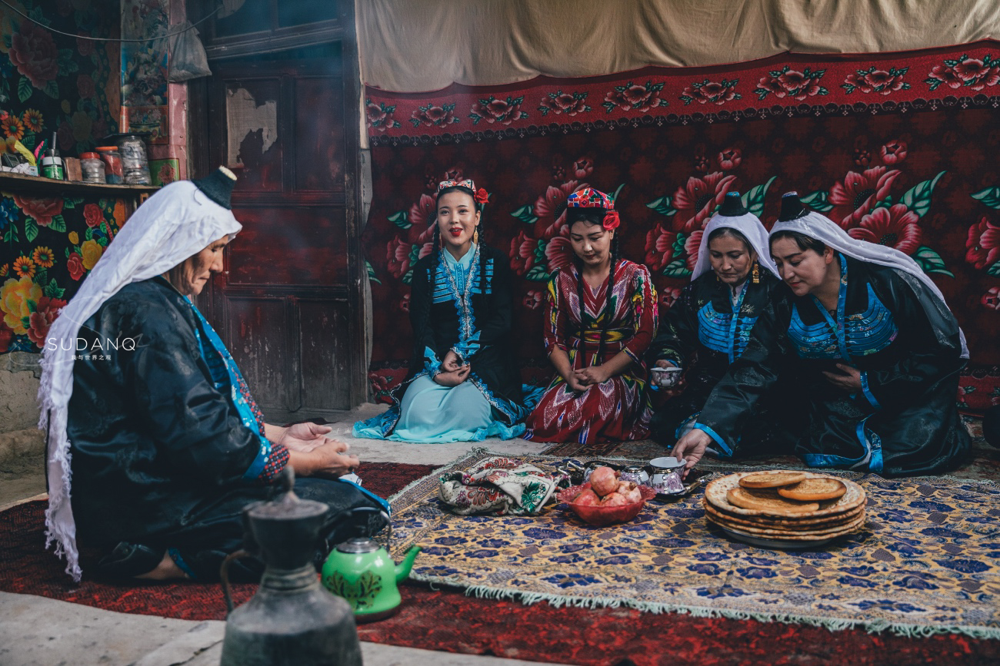
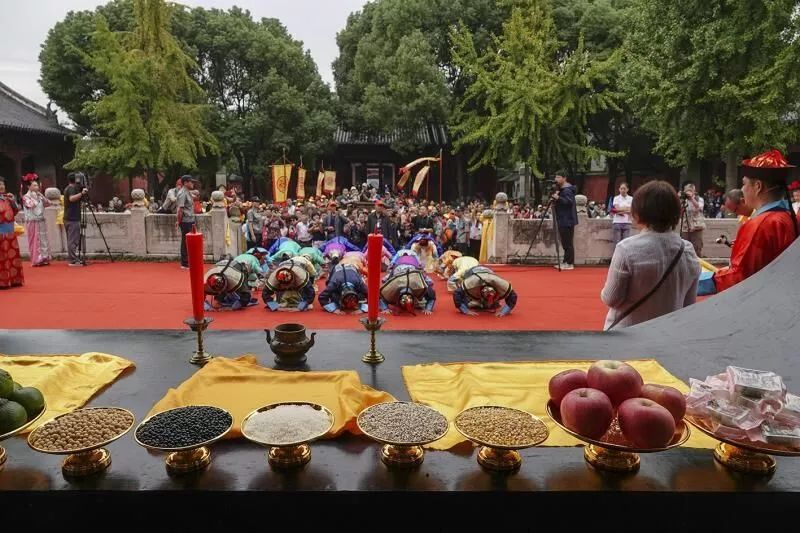
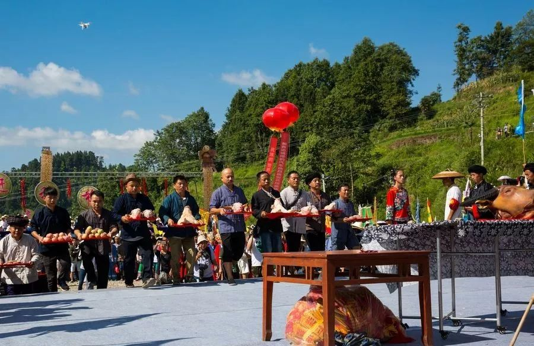
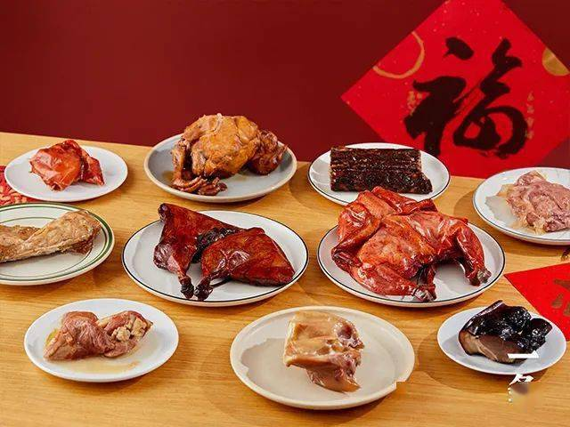
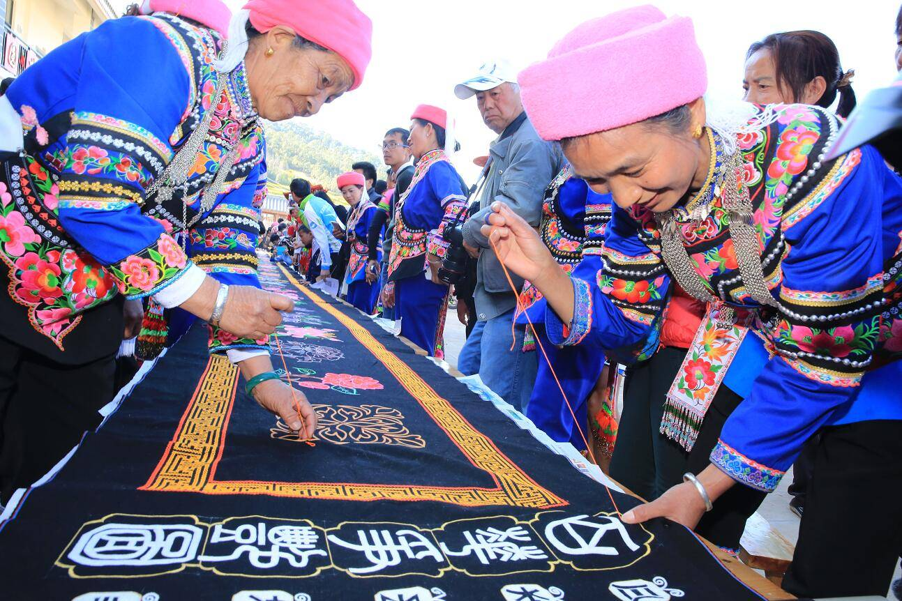

重庆人千百年来形成的春节拜年、十五观灯、清明祭祖、中秋赏月以及悬酒幌、赶庙会、坐花轿、放风筝等民俗，与中国其他地区相比大同小异。但由于重庆有五个土家族、苗族自治县，这两个既热情又传统的民族都有自己独特的民俗节日。
心灵手巧的土家族人，在舞蹈上拥有非凡的天赋。每年正月初三至十五，土家族人都要举行盛大的祭祀、祈祷、喜庆活动。男女老少穿起节日的盛装，跳起欢快而热烈的摆手舞。一时间，满耳喧天鼓乐，满眼婆娑舞影。骁勇善战的苗族人，则对唱歌情有独钟。一年一度的“赶秋”，是苗族人大展歌喉的传统节日。青年男女还可以在“赶秋”节上，借歌声互表衷情。

黔江地区的土家族，在每年正月初三至十五有大型祭祀、祈祷、喜庆活动，其间要跳摆手舞。盛会时，热闹非凡，方圆数百里的土家人，男披西兰卡普，女着艳丽盛装，结队而来。摆手堂前，张灯结彩，巫师头戴凤冠高帽，腰系八幅罗裙，手摇铜铃司刀，手舞足蹈地进行指挥。三声炮响，鼓乐齐鸣，顿时歌声大作，男女相携，翩跹起舞，通宵达旦。“红灯万盏人干叠，一片缠绵摆手歌”。摆手舞源于古代的巴渝舞，动作有单摆、双摆、回旋摆，表现礼节仪式，劳动场景或战斗动作，节奏明快，舞姿优美，原始气息震慑人心。

苗家人能歌善舞，苗家的歌或高亢激昂，或清越婉转，人不见面歌见面，人人会歌，以歌问候，用歌叙事，凭歌寄情。歌，是苗族人寸步不离的影子，还是青年男女传情达意、互通心声的大媒人。婚礼时，更离不了歌，主人要对客人唱谢客歌，对媒人唱谢媒歌，大家要对新婚夫妇唱祝福歌，亲朋好友要相互赛歌、对歌、盘歌，连唱三天三夜。
“赶秋”是苗族人一年一度的传统节日，立秋这天，山寨的苗家人，换上节日盛装，从四面八方涌向秋场，场上锣鼓喧天、歌声萦绕，打秋千、上刀梯、舞狮子、玩龙灯、跳猴儿鼓舞、歌台赛歌，热闹异常。青年男女利用“赶秋”物色情侣，歌郎歌娘大展歌喉。
此外，苗族的节日，还有“三月三”、“六月六”、“七月七”、“过苗节”和“羊马节”等。

巴渝文化是中国传统文化源远流长的一部分。“炎黄”的始迹在黄河流域，而从夏禹始，先民的传闻则已开始南渐。禹的'出生地相传有三处，都在长江流域，即四川、江西九江和安徽。据大量史籍所载，禹就是生于四川境内的汶山郡广柔县石纽乡，娶江州涂山。古江州就是今日之重庆。秦灭巴国设巴郡后，巴人更是长足步入了汉化的过程。三千多年来，重庆处处留下中国传统文化的印痕。渝鄂交界处，有屈原，王昭君的故里;涪陵周易园，是程朱理学的发祥地;大足石刻，汇集了中国唐、未时期石窟艺术的大量珍品;合川钓鱼城，保存着南京军民抗击蒙哥军队入侵的古战场遗址。历代诗人如李白、杜甫、刘禹锡、苏轼、陆游、郭沫若等，都在这里写有许多脍炙人口的名篇佳句。巴渝人千百年来形成的春节拜年，十五观灯、清明祭祖、中秋赏月以及悬酒幌、赶庙会、坐花轿、放风筝等民风民俗，涵盖婚丧嫁娶、文娱游戏、鬼神观念、崇拜禁忌、岁时节令，工商交易等各个范畴，与中国其他地区比较，无不大同小异。重庆丰富多彩的地方戏剧、曲艺、绘画，手工艺品及群众节令活动等，也颇能反映巴渝风俗民情。
“扣肉”“灌海椒”不可少。刚进腊月，重庆市酉阳土家族苗族自治县板溪乡红杏村农民许文旭家就忙开了。为了准备好这顿年夜饭，一些必不可少的传统主菜不提前十天半月准备是不行的。其中最主要的当数“扣肉”和“灌海椒”。许文旭说，“扣肉”看似简单，但要做到真正肥而不腻、嫩滑爽口，是要下一番工夫的。“灌海椒”则是把糯米面拌上作料后填入一个个掏空的海椒中，然后放入咸菜罐子里封存半个月，到了除夕，拿出来用油一炸就可以上桌了。
令人意外的是，海带还曾一度成为土家年夜饭的主菜。因为以前土家族聚集地区吃盐巴都困难，医疗条件也差，经常有人因缺碘患上大脖子病。为了给家人补碘，土家人就在年夜饭上一道海带，以补充人体所需的碘。在当时的条件下，海带对土家人来说，真可谓“山珍海味”，经常吃根本不可能，因此成了年夜饭上的一道好菜。如今，海带早已退出年夜饭的“舞台”
土家人吃过年夜饭后，各家都会燃起一根木柴，大家围坐聆听老人讲故事，守岁到天亮，名叫“守田梗”，以表达对田地的热爱。
客家人的不断迁徙，使他们对故土更为留恋。对家乡山水、习俗的怀念使他们紧紧地团结起来，战胜了一次又一次的艰难困苦，传统习俗成为联系客家人的坚强纽带。在川籍客家人中，二、三百年来仍保持了客家的传统风俗习惯。
客家人对农历新年极为重视。家家户户挂彩灯、贴门神，并在粮仓、家禽牲畜圈上贴写吉祥的语言，以示来年的丰收吉祥。有条件的客家乡镇从正月到二月要耍灯舞，灯的种类有龙灯、狮灯、蚌灯等，这是客家人在原籍的彩灯习俗流传至今。

舞族服饰，各地不尽相同。凉山、黔西一带，男子通常穿黑*窄袖右斜襟上衣和多褶宽裤脚长裤，有的地区穿小裤脚长裤，并在头前部正中蓄小绺长发头帕，右方扎一钳形结。妇女较多地保留民族特点，通常头上缠包头，有围腰和腰带;一些地方的妇女有穿长裙的习惯。男女外出时身披擦尔瓦。首饰有耳坠、手镯、戒指、领排花等，多用金银及玉石做成。
彝族生活中的主要食物，大部分地区是玉米，次为荞麦、大米、土豆、小麦和燕麦等。肉食主要有牛肉、猪肉、羊肉、鸡肉等，喜欢切成大块大块(拳头大小)煮食，汉族称之为“砣砣肉”。大、小凉山及大部分彝族禁食猪肉，不食马肉及蛙蛇之类的肉。彝族喜食麻、辣，嗜酒，有以酒待客的礼节。酒为解决各类纠纷，结交朋友、婚丧嫁娶等各种场合中必不可少之物。
各地彝族盛行父系小家庭制，幼子往往和父母住在一起。妇女地位较低。遗产由诸子平分，绝业一般归近亲所有。彝族历史上盛行父子连名，此俗在凉山彝族居民中一直继续到建国前。一夫一妻是彝族婚姻的基本制度，娶媳需付较高的聘金，交错从表婚比较流行，夫死实行转房。建国前云南部分彝族地区还保持着公房制度，凉山彝族保持着严格的等级内婚。历史上舞族多实行火葬，建国前，凉山及云南沿江一带居民仍行此葬俗。其他地区自明、清以来逐渐改为上葬。
